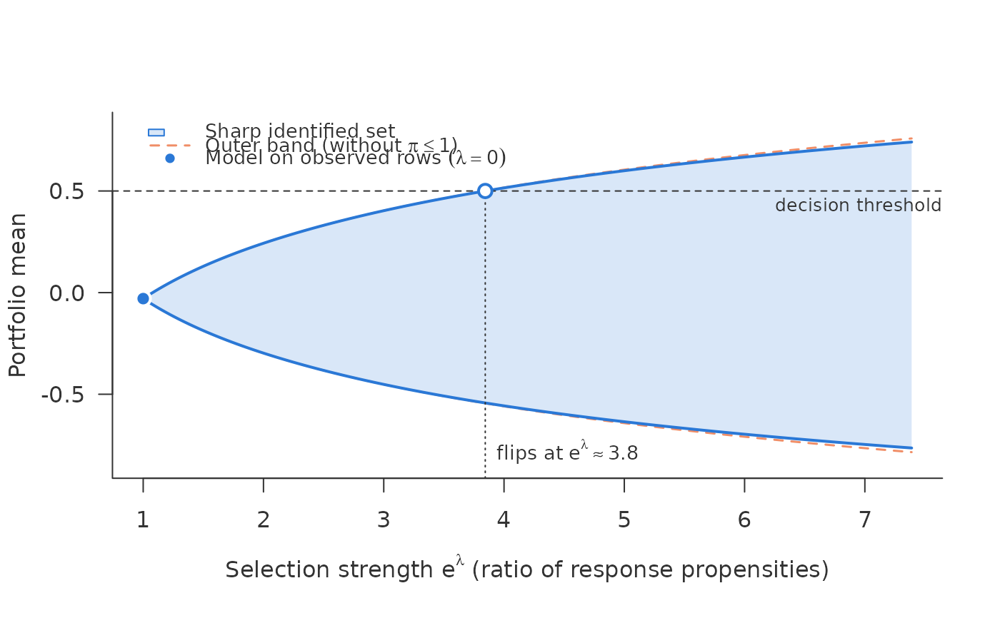

Sharp identified set for a mean under a bounded ratio of response propensities
Source:R/scan_mean.R
sharp_scan_mean.Rdsharp_scan_mean() is the scan of sharp_scan() for an outcome that is
not binary: continuous, count or anything with a finite mean. It answers
the same question – how far can the answer move if the outcome is missing
not at random – under literally the same assumption, without restriction
to two outcome values. Like sharp_scan() it needs no shadow variable.
Usage
sharp_scan_mean(
q,
r,
lambda = seq(0, 2, length.out = 81),
weights = NULL,
threshold = NULL,
unobserved = FALSE
)Arguments
- q
Numeric matrix, \(n \times K\): row \(i\) holds the conditional quantiles of \(Y\) given \(R=1, X=x_i\) at the levels \((k - 1/2)/K\). A vector is taken as a single row.
- r
Numeric vector of \(\hat r(x)\), in (0, 1], length \(n\).
- lambda
Non-negative bounds; \(e^\lambda\) is the largest admissible ratio of response propensities. Sorted and de-duplicated.
- weights
Optional non-negative row weights for the portfolio mean.
- threshold
Optional decision threshold on the portfolio mean; the smallest \(\lambda\) at which the sharp set (and the outer band) reaches it is found by root finding. Both bounds are monotone in \(\lambda\).
- unobserved
FALSE(default): the set is for \(E(Y \mid X = x)\), averaged over the rows given.TRUE: the rows given are unobserved rows and the set is for their own missing outcomes, row by row \(E(Y \mid R = 0, X = x) = \{E(Y \mid X = x) - r\,m(x)\}/(1 - r)\) with \(m(x)\) the observed mean, as forsharp_scan(). Every row needs \(r < 1\).
Value
An object of class c("sharp_scan_mean", "sharp_scan") with the
same structure as sharp_scan(): curve (lambda, lower, upper,
and naive_lower, naive_upper for the outer band without the cap),
point, threshold, flip. as.data.frame(x, lambda = ) returns the
pointwise sets.
The assumption
With \(\pi(y,x) = P(R=1 \mid Y=y, X=x)\), assume pointwise in \(x\)
$$\pi(y,x) \le 1, \qquad \sup_y \pi(y,x) \le e^{\lambda}\,\inf_y \pi(y,x).$$
\(e^\lambda\) bounds the ratio of response propensities between any two
outcome values: a risk ratio, not an odds ratio. For binary \(Y\) it
is exactly the assumption \(|b(x)| \le \lambda\) of sharp_scan(). It
is a member of the class of assumptions of Manski (2016, Sect. 4.2), with
the ratio taken between outcomes rather than relative to the response rate.
The set
Fix \(x\). Let \(m\) be the mean and \(Q\) the quantile function of \(Y\) given \(R=1, X=x\), \(r = P(R=1 \mid X=x)\), and \(U(s) = \int_{1-s}^{1} Q(v)\,dv\) the integral of the upper tail. With \(\kappa = e^\lambda - 1\) and \(\bar s = \min\{1, (1-r)/(r\kappa)\}\) the sharp identified set for \(E(Y \mid X=x)\) is \([\mu^-, \mu^+]\), $$\mu^+ = \max_{0 \le s \le \bar s} \frac{m + \kappa\,U(s)}{1 + \kappa s},$$ and \(\mu^-\) the same expression for \(-Y\), negated. Both endpoints are attained: the extremal propensity is \(1/a\) below the quantile \(Q(1-s^*)\) and \(e^{-\lambda}/a\) above it, with \(a = 1/\{r(1 + \kappa s^*)\}\). The upper bound \(\bar s\) on \(s\) is the constraint \(\pi \le 1\); dropping it (\(\bar s = 1\)) gives the outer band, which does not depend on \(r\) and is the same as the outer band of the binary scan. Ignoring \(r\) gives an outer set, not a sharp one, in the sense of Dorn and Guo (2023). The cap binds for \(r\) near one or large \(\lambda\); for small \(r\) sharp set and outer band coincide.
For binary \(Y\) the formula reduces to the closed form of
sharp_scan(), the outer band intersected with the bounds of Manski
(1989). As \(\lambda \to \infty\) the set grows to those bounds,
\([rm + (1-r)\inf Y,\; rm + (1-r)\sup Y]\), reaching them only in the
limit for a continuous outcome. For every finite \(\lambda\) it is
bounded, whatever the tails, as long as \(E|Y| < \infty\).
The inputs
Per row, the conditional quantiles of \(Y\) given \(R=1, X=x_i\) at the
levels \((k - 1/2)/K\), \(k = 1, \dots, K\), as an \(n \times K\)
matrix q; each column carries mass \(1/K\). The discretisation error is
\(O(1/K)\); \(K = 200\) is plenty for a plot. Where the quantiles come
from – quantile regression, a distributional model, draws from a
generative model – is the user's business, as \(\hat\eta_{\mathrm{obs}}\)
is in the binary scan; the package never sees a learner. quantile_grid()
builds q from a quantile regression, any quantile function or draws.
Rows are sorted
internally, so crossing quantile curves do no harm. A quantile grid cuts
off the tails: with heavy tails it underestimates \(U(s)\) for small
\(s\), and therefore the width of the set. r is the conditional
observation rate, as in sharp_scan().
Estimated inputs
The set is an identified set: it is what the data would permit if the
observed-data law were known exactly. The scan plugs in
the quantiles and \(\hat r\) as if they were the truth.
Their estimation error is not included, so the reported set is
narrower than an honest statement about the population would be; in
simulations the plug-in was typically biased towards the inside of the
set. For a debiased estimate
with a confidence set, for the mean over all rows or over a segment chosen
by \(X\), use sharp_scan_mean_ci() with inputs from
crossfit_quantiles(). No resampling captures misspecification of the
extrapolation to rows that are rarely observed.
Estimate \(\hat r(x)\) flexibly. Unlike the binary scan, the set for a mean reacts to \(\hat r\) in first order: \(\hat r\) decides row by row through \(\bar s(x)\) whether the cap \(\pi \le 1\) binds. In simulations a misspecified response model narrowed the set visibly from \(\lambda = 1\) on, and by about 0.008 per endpoint at \(\lambda = 2\); in the binary case the same misspecification moved the endpoints by at most 0.0005.
Only the mean
The set is for \(E(Y \mid x)\) and its portfolio average. Quantiles or the whole distribution of \(Y\) are different optimisation problems and are not covered.
Aggregation
Only the average of the pointwise endpoints ("union", the default of
sharp_scan()). Because the assumption is pointwise and both the
normalisation and the ratio bound separate across \(x\), this is the
sharp set for the portfolio mean. The "common" aggregation of the binary
scan has no counterpart here: it fixes one tilt for all rows, which
presupposes a parametric form of the tilt in \(y\), and the
nonparametric model has none.
References
Dorn, J. and Guo, K. (2023). Sharp sensitivity analysis for inverse propensity weighting via quantile balancing. Journal of the American Statistical Association, 118(544), 2645–2657. doi:10.1080/01621459.2022.2069572
Manski, C. F. (1989). Anatomy of the selection problem. Journal of Human Resources, 24(3), 343–360. doi:10.2307/145818
Manski, C. F. (2016). Credible interval estimates for official statistics with survey nonresponse. Journal of Econometrics, 191(2), 293–301. doi:10.1016/j.jeconom.2015.12.002
See also
sharp_scan() for a binary outcome, with the optional
common-tilt aggregation; obs_quantiles() for simulated input.
Examples
d <- simulate_shadow(3000, tilt = -1, outcome = "continuous", seed = 1)
q <- obs_quantiles(d, K = 200)
rej <- d$observed == 0
s <- sharp_scan_mean(q[rej, ], d$obs_rate[rej], threshold = 0.5)
s
#> <sharp_scan_mean> sharp identified set for a mean under a propensity ratio <= exp(lambda)
#> rows: 1803 aggregation: union
#> lambda = 0 (model on observed rows): -0.0295
#> lambda = 2 (propensity ratio 7.39): sharp [-0.764, 0.741], outer [-0.785, 0.758]
#> threshold 0.5 reached by
#> sharp set: lambda = 1.35 (propensity ratio 3.84)
#> outer band: lambda = 1.34 (propensity ratio 3.83)
mean(d$mu[rej]) # the truth, inside the set from lambda = 1 on
#> [1] 0.2486224
plot(s)
